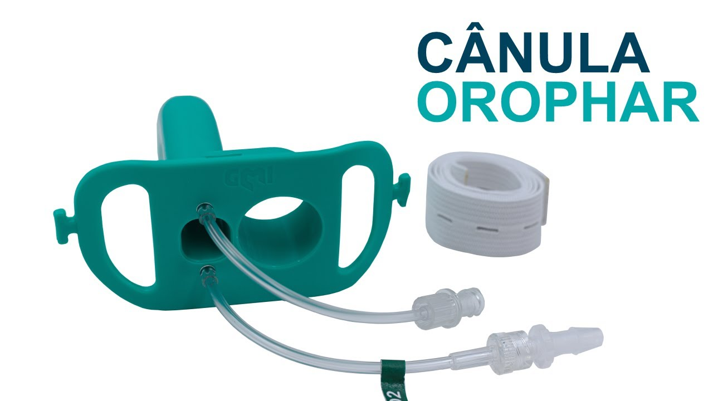

Acessos separados
Dois lúmens organizam o acesso oral: um canal para passagem de instrumentos e outro relacionado à via aérea.
APRESENTAMOS O OROPHAR 2.0
Cânula orofaríngea de duplo lúmen. Um design que reúne acesso para instrumentos, oferta de oxigênio e capnografia.
Para profissionais, instituições e parceiros de distribuição.

01 / O CONCEITO
Quando o procedimento precisa compartilhar o acesso oral, cada detalhe do dispositivo importa. Conheça a arquitetura por trás da tecnologia OROPHAR.
A fotografia ilustra a geração anterior. Características do modelo fornecido devem ser conferidas nas instruções de uso vigentes.
Dois lúmens organizam o acesso oral: um canal para passagem de instrumentos e outro relacionado à via aérea.
O desenho prevê conexões para oferta de O₂ e amostragem de CO₂ expirado, integrando funções em um único dispositivo.
Bloco de mordedura e passagem dedicada compõem a arquitetura para acomodar instrumentos durante o procedimento.
Descrição do conceito baseada na patente brasileira. A patente não substitui as indicações e instruções de uso do produto. Consultar desenho técnico
DESIGN EM PERSPECTIVA
A diferença começa na arquitetura. A proposta do OROPHAR combina recursos para procedimentos que precisam de acesso oral compartilhado.
| Característica | Guedel convencional¹ | OROPHAR CONCEITO DE DESIGN² |
|---|---|---|
| Arquitetura | Lúmen central único | Duplo lúmen |
| Passagem dedicada para instrumentos | Não integra o desenho convencional | Prevista no desenho |
| Acessos para O₂ e CO₂ | Não integrados ao modelo convencional | Previstos no desenho |
¹ Modelo convencional descrito na patente. ² Comparação estrutural; não demonstra superioridade clínica. Confirmar recursos, compatibilidade e indicações do OROPHAR 2.0 na documentação vigente. Fonte: patente BR102019003396B1
02 / EVIDÊNCIA CLÍNICA
Conheça a pesquisa sobre a tecnologia OROPHAR e o contexto dos resultados publicados.
BRAZILIAN JOURNAL OF ANESTHESIOLOGY
DOI: 10.1016/j.bjane.2020.04.019
OBSERVADO NA SÉRIE PUBLICADA
inserção considerada fácil29 / 30 pacientes
manuseio adequado da sonda de ETE28 / 30 exames
Houve dessaturação leve em 7/30 pacientes e laringoespasmo em 1/30. Manobras de alinhamento da via aérea foram necessárias em 28/30. Não houve dessaturação grave.
Estudo sem grupo comparador, com a geração anterior (ANVISA 80423540061). Não é validação clínica específica do OROPHAR 2.0 nem comprovação de superioridade sobre Guedel.
03 / INFORMAÇÕES DO PRODUTO
Converse com nossa equipe sobre a configuração, a documentação e as condições de fornecimento para sua instituição.
Solicitar informações técnicasSelecione um tamanho para incluir na solicitação.
A seleção expressa interesse comercial, não recomendação clínica.
Dados para identificação e consulta. A seleção e o uso devem seguir a documentação atual do modelo e a avaliação do profissional habilitado.
Consultar produto na ANVISA04 / CENTRAL DE DOCUMENTOS
Referências para avaliação técnica, científica e comercial. Acesse as fontes ou solicite a documentação vigente do produto.
Nigro Neto et al. · 2020 · Geração anterior
Diário Oficial da União · 26/02/2024 · página 131 · 202 KB
BR102019003396B1 · Publicação de concessão, 2024 · 3.2 MB
Apresentação resumida · versão para impressão
Solicite os documentos do modelo de interesse à equipe
Documentos históricos são identificados como tal. A publicação de uma patente não certifica segurança clínica, autorização sanitária ou titularidade atual.
05 / AIRWAY INSIGHTS MEDICAL
A Airway Insights Medical tem como foco tecnologias para o manejo de vias aéreas. O OROPHAR 2.0 é o ponto de partida para aproximar produto, conhecimento técnico e prática clínica.
EXPERIÊNCIA POR TRÁS DA PESQUISA
Anestesiologista e pesquisador, primeiro autor do estudo clínico publicado sobre o OROPHAR. Uma trajetória que conecta anestesia cardiovascular, ensino e desenvolvimento de tecnologia médica.
Coautor de pesquisa multicêntrica em anestesia cardiovascular publicada no New England Journal of Medicine (2019) ↗.
Credenciais com referências públicas. Vínculos acadêmicos não representam endosso institucional ao produto.
DISTRIBUIÇÃO & PARCERIAS
Sua empresa atua com dispositivos médicos? Converse com a Airway Insights sobre oportunidades de distribuição do OROPHAR 2.0.
Tenho interesse em distribuirApresente sua empresa
e região de atuação.
Converse sobre o produto
e a documentação disponível.
Avalie oportunidades
com nossa equipe comercial.
PERGUNTAS FREQUENTES
Escolha “Solicitar cotação” e informe sua instituição, região e quantidade de interesse. O formulário prepara uma mensagem para você revisar e enviar pelo seu e-mail. Preços, prazos e disponibilidade são confirmados pela equipe comercial.
Não. O estudo avaliou a geração anterior do OROPHAR, identificada no artigo pelo número ANVISA 80423540061. A versão atual é apresentada separadamente. Consulte a seção de evidência para conhecer o desenho e as limitações do estudo.
Solicite à equipe a versão vigente das instruções de uso e a ficha técnica correspondentes ao modelo fornecido. O material desta página é informativo e não substitui esses documentos.
Recebemos contatos de empresas interessadas. Selecione “Distribuição e parceria” no formulário e inclua sua região, perfil de clientes e experiência com dispositivos médicos. As condições serão avaliadas individualmente.
Não. O inglês facilita o acesso à informação. A disponibilidade comercial e as indicações dependem dos requisitos e autorizações aplicáveis a cada mercado. Consulte nossa equipe sobre seu país.
06 / CONTATO COMERCIAL
Conte o que sua equipe precisa. Vamos conversar sobre aquisição, documentação técnica ou distribuição do OROPHAR 2.0.
Não inclua dados de pacientes na sua mensagem.